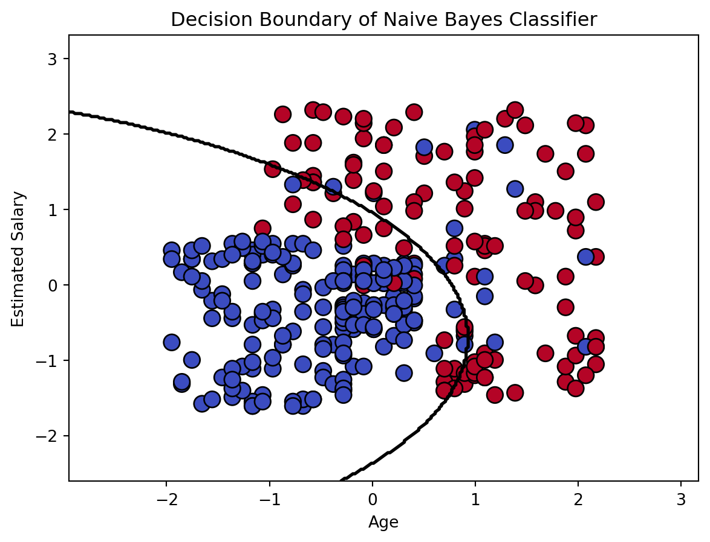

Decoding Customer Behavior: An In-Depth Analysis with Naive Bayes Classifier (BLOG ON PROBABILITY THEORY AND RANDOM VARIABLES)
Exploratory Data Analysis (EDA)
Probability Theory
Random Variables
Naive Bayes Classifier
Author
Gayatri Milind Bhatambarekar
Published
December 7, 2023
Understanding customer behavior is a crucial aspect of strategic decision-making for businesses. In this blog post, we delve into a dataset containing information about 400 clients, exploring their demographics, purchasing decisions, and applying a Naive Bayes classifier to predict whether a customer will make a purchase based on their age and estimated salary.
Exploring the customer behavior dataset
# Importing necessary librariesimport numpy as npimport pandas as pdimport seaborn as snsimport matplotlib.pyplot as pltfrom sklearn.naive_bayes import GaussianNBfrom sklearn.metrics import accuracy_score, roc_curve, aucfrom sklearn.model_selection import train_test_splitfrom sklearn.preprocessing import StandardScalerfrom sklearn.metrics import classification_report, confusion_matrix, ConfusionMatrixDisplay# Loading the datasetdf = pd.read_csv("Customer_Behaviour.csv")df.head(10)
User ID
Gender
Age
EstimatedSalary
Purchased
0
15624510
Male
19
19000
0
1
15810944
Male
35
20000
0
2
15668575
Female
26
43000
0
3
15603246
Female
27
57000
0
4
15804002
Male
19
76000
0
5
15728773
Male
27
58000
0
6
15598044
Female
27
84000
0
7
15694829
Female
32
150000
1
8
15600575
Male
25
33000
0
9
15727311
Female
35
65000
0
# Checking the shape and data types of the datasetprint(df.shape)print(df.dtypes)
(400, 5)
User ID int64
Gender object
Age int64
EstimatedSalary int64
Purchased int64
dtype: object
# Descriptive statistics of the datasetdf.describe()
User ID
Age
EstimatedSalary
Purchased
count
4.000000e+02
400.000000
400.000000
400.000000
mean
1.569154e+07
37.655000
69742.500000
0.357500
std
7.165832e+04
10.482877
34096.960282
0.479864
min
1.556669e+07
18.000000
15000.000000
0.000000
25%
1.562676e+07
29.750000
43000.000000
0.000000
50%
1.569434e+07
37.000000
70000.000000
0.000000
75%
1.575036e+07
46.000000
88000.000000
1.000000
max
1.581524e+07
60.000000
150000.000000
1.000000
# Visualizing the data# Pairplotsns.pairplot(df, hue='Purchased', diag_kind='kde')plt.show()
Understanding the correlation between features is essential in selecting appropriate variables for the models. We visualize this correlation using a heatmap:
# Histograms and KDE for Ageplt.figure(figsize=(12, 5))plt.subplot(1, 2, 1)sns.histplot(df[df['Purchased'] ==1]['Age'], kde=True, color='blue', label='Purchased=1')sns.histplot(df[df['Purchased'] ==0]['Age'], kde=True, color='orange', label='Purchased=0')plt.title('Distribution of Age for Purchased/Not Purchased')plt.legend()# Histograms and KDE for Estimated Salaryplt.subplot(1, 2, 2)sns.histplot(df[df['Purchased'] ==1]['EstimatedSalary'], kde=True, color='blue', label='Purchased=1')sns.histplot(df[df['Purchased'] ==0]['EstimatedSalary'], kde=True, color='orange', label='Purchased=0')plt.title('Distribution of Estimated Salary for Purchased/Not Purchased')plt.legend()plt.show()
To visualize the distribution of age and estimated salary separately for customers who made a purchase (Purchased=1) and those who did not (Purchased=0). The above plot provides a clearer understanding of the characteristics of customers in each category.
Probability Theory and Random Variables
Next, we apply probability theory to calculate the likelihood of customers making a purchase or not. The probabilities of purchase (Purchased=1) and no purchase (Purchased=0) provide a foundational understanding of the dataset. We then categorize age and salary into bins, allowing us to compute conditional probabilities for different age and salary groups.
# Code for calculating probabilitiestotal_samples =len(df)p_purchase =len(df[df['Purchased'] ==1]) / total_samplesp_no_purchase =len(df[df['Purchased'] ==0]) / total_samplesprint(f"Probability of Purchase: {p_purchase:.2f}")print(f"Probability of No Purchase: {p_no_purchase:.2f}")
Probability of Purchase: 0.36
Probability of No Purchase: 0.64
# Code for calculating conditional probabilities for 'Age' and 'EstimatedSalary'# Define age and salary categoriesage_bins = [0, 30, 40, 50, 60, np.inf]salary_bins = [0, 50000, 100000, 150000, np.inf]df['Age_Category'] = pd.cut(df['Age'], bins=age_bins, labels=['0-30', '30-40', '40-50', '50-60', '60+'])df['Salary_Category'] = pd.cut(df['EstimatedSalary'], bins=salary_bins, labels=['0-50k', '50k-100k', '100k-150k', '150k+'])# Calculate conditional probabilitiescond_prob_age_purchase = df.groupby('Age_Category', observed=False)['Purchased'].mean()cond_prob_salary_purchase = df.groupby('Salary_Category', observed=False)['Purchased'].mean()print("Conditional Probabilities:")print("Age - Probability of Purchase:")print(cond_prob_age_purchase)
Conditional Probabilities:
Age - Probability of Purchase:
Age_Category
0-30 0.054054
30-40 0.232394
40-50 0.602041
50-60 0.918367
60+ NaN
Name: Purchased, dtype: float64
print("\nSalary - Probability of Purchase:")print(cond_prob_salary_purchase)
Salary - Probability of Purchase:
Salary_Category
0-50k 0.354839
50k-100k 0.182266
100k-150k 0.849315
150k+ NaN
Name: Purchased, dtype: float64
Naive Bayes Classifier
The spotlight of our analysis is the implementation of a Naive Bayes classifier. We select ‘Age’ and ‘EstimatedSalary’ as features to predict the ‘Purchased’ outcome. After splitting the data into training and testing sets and standardizing the features, we train the classifier and evaluate its performance. The accuracy, confusion matrix, and classification report offer a comprehensive overview of the model’s predictive capabilities.
# Feature selectionX = df[['Age', 'EstimatedSalary']]y = df['Purchased']# Splitting the data into training and testing setsX_train, X_test, y_train, y_test = train_test_split(X, y, test_size=0.2, random_state=42)# Standardize featuresscaler = StandardScaler()X_train_scaled = scaler.fit_transform(X_train)X_test_scaled = scaler.transform(X_test)# Apply Naive Bayes classifiernb_classifier = GaussianNB()nb_classifier.fit(X_train_scaled, y_train)# Make predictions on the test sety_pred = nb_classifier.predict(X_test_scaled)# Evaluate the performance of the classifierprint("Naive Bayes Classifier Results:")print(f"Accuracy: {accuracy_score(y_test, y_pred):.2f}")
To visualize the classifier’s decision-making process, we plot the decision boundary on a scatter plot of the training data. This boundary helps us understand how the model separates customers who make a purchase from those who do not. Additionally, we explore the probability surface, gaining insights into the regions where the model predicts a higher probability of purchase.
# Function to plot decision boundarydef plot_decision_boundary(X, y, model, title): h =.02# Step size in the mesh x_min, x_max = X[:, 0].min() -1, X[:, 0].max() +1 y_min, y_max = X[:, 1].min() -1, X[:, 1].max() +1 xx, yy = np.meshgrid(np.arange(x_min, x_max, h), np.arange(y_min, y_max, h)) Z = model.predict(np.c_[xx.ravel(), yy.ravel()]) Z = Z.reshape(xx.shape) plt.scatter(X[:, 0], X[:, 1], c=y, cmap=plt.cm.coolwarm, edgecolors='k', s=100) plt.contour(xx, yy, Z, levels=[0], linewidths=2, colors='black') # Contour at the decision boundary plt.title(title) plt.xlabel('Age') plt.ylabel('Estimated Salary') plt.show()# Plot decision boundary of Naive Bayes classifierplot_decision_boundary(X_train_scaled, y_train, nb_classifier, "Decision Boundary of Naive Bayes Classifier")# Plotting probability surfacedef plot_probability_surface(model, X, y): proba = model.predict_proba(X) plt.figure(figsize=(12, 6))# Plotting decision boundary plot_decision_boundary(X, y, model, "Decision Boundary with Probabilities")# Contour plot for probability of Purchase plt.contourf(X[:, 0], X[:, 1], proba[:, 1], levels=10, cmap=plt.cm.coolwarm, alpha=0.6) plt.colorbar(label='Probability of Purchase') plt.title("Probability Surface") plt.xlabel('Age') plt.ylabel('Estimated Salary') plt.show()

Receiver Operating Characteristic (ROC) Curve
No analysis is complete without assessing the model’s ability to discriminate between positive and negative instances. We construct an ROC curve, illustrating the trade-off between true positive rate and false positive rate. The area under the ROC curve (AUC-ROC) serves as a quantitative measure of the model’s performance.
In conclusion, our exploration of customer behavior data involving 400 clients has provided valuable insights into the factors influencing purchase decisions. Leveraging descriptive statistics and machine learning techniques, we gained a nuanced understanding of the dataset.
The mean age of customers was found to be approximately 37.65 years, with an average estimated salary of $69,742.50. Moreover, our analysis revealed a 36% probability of a customer making a purchase and a 64% probability of no purchase.
The application of a Naive Bayes classifier yielded remarkable results, with an accuracy rate of 94%. This signifies the model’s proficiency in correctly predicting whether a customer will make a purchase or not. Furthermore, the Area Under the Receiver Operating Characteristic (ROC) Curve (AUC-ROC) reached an impressive 0.98, underscoring the classifier’s robust discriminatory capabilities.
These findings hold significant implications for businesses aiming to understand and predict customer behavior. By harnessing such insights, companies can tailor their marketing and sales strategies to effectively target potential customers, ultimately enhancing decision-making processes and driving business success.